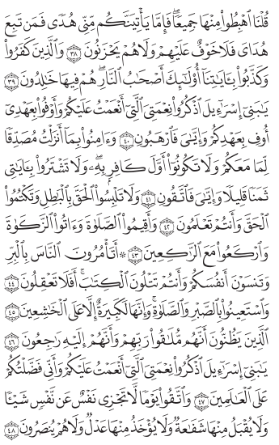

A settled decision, reopened
Should a page turn curl?
When you turn a page in the app today, a soft seam sweeps across the words and the next page is underneath — but no word ever moves. A paper book does something different: you grab the outer edge and the leaf curls up and over. The app once ruled the curl out, on three grounds. A new idea — show plain grey lines where the words will be while the leaf is moving, and let the real words settle in only once it lies flat — may answer all three. This page mounts four ways to turn a page so you can turn them by hand and decide, because a curl is something you feel, not something a picture can settle.
A few words, defined once
- Leaf
- One sheet of the book. It has two sides — the page you are reading and the page on its back.
- Opening
- The two pages you see at once when the book is open flat.
- Gutter
- The shadowed valley down the middle of an opening, where the two pages meet at the spine.
- Fore-edge
- The outer edge of a leaf, opposite the spine — the edge you grab to turn it. Look at it and you see the stacked cut edges of all the leaves beneath.
- Skeleton lines
- Plain grey bars drawn where lines of text will be, before the real words load — the same "still loading" placeholder a reader sees all over the web.
What is being decided?
Should turning a page curl the leaf the way a paper book does — or keep sweeping a flat seam across the words, the way the app does today? And if it curls, what rides on the curling surface: the real words, or grey skeleton lines that become words only once the leaf is flat?
What does this change for a hafiz?
Barely. How a turn feels does not change what a hafiz keeps. Many huffaz remember a verse by where it sits on the page, but every option here leaves the resting page exactly as printed, so none of them touches that memory. Decide it quickly, or leave it open at no cost.
- A · Flat seam: the words never move, so the page you memorised is never smeared mid-turn.
- B · Skeleton curl: for a moment the page is grey bars, not the page you know. That is harmless in a quick turn, and odd if you glance at the page while it is still turning.
- C · Curl the real words: the most like paper, and the heaviest for a phone. A stutter in the middle of a revision costs more than a plain turn does.
- D · Shadow lift: the page stays whole; the only risk is a turn so quiet you are not sure it happened.
Why is this being asked now?
The app ships the flat seam, and the owner asked for a real corner-curl turn like a paper book. An earlier note had already considered the curl and rejected it, on three grounds worth quoting in full so this page is not pretending they don't exist:
A curl moves the words, and the one rule of a page turn here is that words never move. A curl also claims two pages are neighbours by the very act of curling — so it cannot tell the truth when the printed book has a leaf here that this build doesn't, or when the two pages simply face each other and nothing turns at all. And the thing the owner pointed at as a reference is a flat ribbon with a fold in it, not a curl.
The reason to reopen it: the skeleton-lines idea may answer the first ground (the curling surface carries grey bars, not words, so no word moves), and the four demos below are built to answer the second (each turn style is made to tell the truth in all four situations). Whether they succeed is what this page is for.
What happens if nobody decides?
The flat seam keeps shipping, and it works. Nothing is blocked behind this — it is a question of how a turn feels, not a defect. The honest cost of waiting is small, so it is fine to leave this open until the demos below either win a reader over or don't.
What does the app do today, and what does that cost?
Today the turn is the flat seam — option A below, playable. It holds one rule above all others: no word moves during a turn. That rule is not taste; it is a measurement. A single printed page in this book is drawn letters, and the drawing is heavy:
| A printed page, as the app draws it | Weight |
|---|---|
| The lightest page (page 1) | about 59 KB of drawn letters |
| A dense page (page 10) | about 154 KB of drawn letters |
Sliding all of that across the screen every frame of a turn is the one thing page-drawing memory cannot afford on a phone, and that is why the seam moves over the words instead of moving them. Any curl has to get past this rule, not around it — which is exactly what the skeleton idea tries to do.
What do other books and apps do?
Paper books curl — that is the reference. E-readers such as the big-name tablets' reading apps also curl, and they can, because their text is light, re-flowable letters they can cheaply redraw mid-curl. This is a survey from earlier work on the turn, not a fresh look today — said plainly so it isn't mistaken for more than it is. The reason their answer doesn't simply transfer: this app doesn't render light re-flowable text; it renders heavy, exact drawn artwork of one specific printing, letter for letter, because a reader who has memorised the page needs the page they memorised. So the curl that is cheap for re-flowable text is the expensive thing the rule above forbids.
What have we already decided that ties our hands?
Three earlier decisions bound this one, and every option below is checked against them:
- Words never move during a turn. The measured rule above. An option that moves the drawn letters reopens it.
- A turn must tell the truth about what lies between the two pages. There are four situations — the two pages face each other; a leaf turned between two different openings; the printed book has a leaf here this build doesn't; or it isn't a turn at all but a jump to somewhere far off. A turn that looks the same in all four is lying about three of them.
- The original rejection of the curl. Reopened here, on its own terms — its bar was "reconsider only if someone can draw a curl that expresses all four situations." The board below is that attempt.
What are the options? Turn each one by hand.
Grab the right edge of the book and pull left to turn, the way you grab a leaf's outer edge. Switch the turn style, and switch which of the four situations you're in — the same turn should tell the truth in each. The book you're turning shows a real printed page from the app; the grey bars are the skeleton lines.
Turn style
What lies between the pages

What else could we consider, and why is it not here?
- Curl the whole leaf at once (a full-page flip). Left off: it is option C at book scale — it moves every drawn letter on the leaf, which is the expensive thing the rule forbids. If C loses on feel, this loses worse.
- Slide the page sideways (push the old page off, slide the new one on). Left off for now: it is a real third family, but it still slides the drawn letters, so it meets the same rule C does. Worth its own page if the curl family is rejected outright.
- A dog-ear only (fold just the corner, never the whole leaf). It is the small end of option B and is really a tuning of it, not a separate answer — so it lives inside B's knobs, not as its own option.
What would change the answer?
- If the printed pages ever became light re-flowable text, curling the real words (option C) would stop being expensive, and the whole rule that forbids it would soften.
- If a hafiz says the flat seam reads as a jump rather than a turn — that the hand doesn't believe a page was turned — that is evidence for a curl the still picture can't give.
- If even the skeleton curl (option B) stutters on a slow phone once it's built for real, the measured rule wins and the flat seam stays.
What is this not settling?
Not the exact shape of the curl — how tight it rolls, how long it takes, whether it makes a sound. Not whether the winning curl borrows the fore-edge colours you see at its fold. And not the performance sign-off: even if a curl wins here on feel, it still owes a real measurement on a slow phone before it shships. This page decides the direction; the numbers come after.
Every colour, edge and width on the turning book is read from the app's own stylesheet at build time, and the printed page shown is real vendored artwork — drawn letters, loaded as an image, so this page carries no Qur'an text of its own. Rebuild it with the build script named in this decision's record. The turn styles are live, interchangeable pieces of code; the one that wins graduates into the app and the losers are deleted, so nothing here is throwaway that the choice did not need.